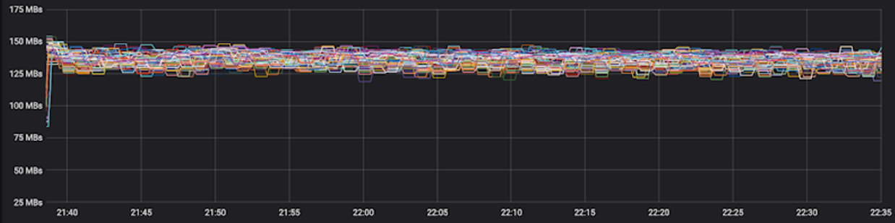

AIStore
AIStore is a lightweight object storage system with the capability to linearly scale-out with each added storage node and a special focus on petascale deep learning.

AIStore (AIS for short) is a built from scratch, lightweight storage stack tailored for AI apps. At its version 2.x, AIS consistently shows balanced I/O distribution across arbitrary numbers of clustered servers and hard drives (consistently) producing performance charts that look as follows:

The picture above comprises 120 HDDs.
The capability to linearly scale-out for millions of stored objects (often also referred to as shards) was, and remains, one of the main incentives to build AIStore. But not the only one.
Features
- scale-out with no downtime and no limitation;
- HTTP REST API to GET/PUT objects, create, destroy, list and configure buckets;
- FUSE client (
aisfs) to access AIS objects as files; - arbitrary number of (extremely lightweight) access points;
- easy-to-use CLI supporting command-line (TAB) completions;
- automated rebalancing upon changes in cluster membership, drive failures, bucket renames;
- N-way mirroring (RAID-1), Reed–Solomon erasure coding, end-to-end data protection;
Also, AIStore:
- can be deployed on any commodity hardware;
- supports Amazon S3 and Google Cloud Storage backends (and all GCS and S3-compliant object storages);
- can be used as a fast tier or a cache for GCS and S3; can be populated on-demand and/or via separate
prefetchanddownloadAPIs; - can be used as a standalone highly-available protected storage;
- includes MapReduce extension for massively parallel resharding of very large datasets.
Last but not least, AIS runs natively on Kubernetes and features open format and, therefore, freedom to copy or move your data off of AIS at any time using familiar Linux tar(1), scp(1), rsync(1) and similar.
For AIStore white paper and design philosophy, please see the overview document (where you can also find 5 alternative ways to populate AIStore with existing datasets).
Table of Contents
- Prerequisites
- Getting Started
- Build, Make, and Development Tools
- Deployment
- Containerized Deployments: Host Resource Sharing
- Performance Monitoring
- Configuration
- Guides and References
- Assorted Tips
- Selected Package READMEs
Prerequisites
- Linux (with
gcc,sysstatandattrpackages, and kernel 4.15+) or MacOS - Go 1.13 or later
- Extended attributes (
xattrs- see below) - Optionally, Amazon (AWS) or Google Cloud Platform (GCP) account(s)
Linux
Depending on your Linux distribution, you may or may not have gcc, sysstat, and/or attr packages.
The capability called extended attributes, or xattrs, is a long time POSIX legacy and is supported by all mainstream filesystems with no exceptions. Unfortunately, extended attributes (xattrs) may not always be enabled (by the Linux distribution you are using) in the Linux kernel configurations - the fact that can be easily found out by running setfattr command.
If disabled, please make sure to enable xattrs in your Linux kernel configuration.
MacOS
MacOS/Darwin is also supported, albeit for development only. Certain capabilities related to querying the state-and-status of local hardware resources (memory, CPU, disks) may be missing, which is why we strongly recommend Linux for production deployments.
Getting Started
AIStore runs on commodity Linux machines with no special hardware requirements whatsoever. Deployment options are practically unlimited and include a spectrum with bare-metal (Kubernetes) clusters of any size, on the one hand, and a single Linux or Mac host, on the other.
It is expected, though, that within a given cluster all AIS target machines are identical, hardware-wise.
Assuming that Go is already installed, the remaining getting-started steps are:
$ cd $GOPATH/src
$ go get -v github.com/NVIDIA/aistore/ais
$ cd github.com/NVIDIA/aistore
$ make deploy
$ go test ./tests -v -run=Mirror
where:
go getinstalls sources and dependencies under your $GOPATH.make deploydeploys AIStore daemons locally and interactively, for example:
$ make deploy
Enter number of storage targets:
10
Enter number of proxies (gateways):
3
Number of local cache directories (enter 0 to use preconfigured filesystems):
2
Select:
0: No cloud provider
1: Amazon Cloud
2: Google Cloud
3: AIS Cloud - remote cluster
Enter your provider choice (0, 1, 2 or 3):
0
Or, you can run all of the above non-interactively:
$ make kill; make deploy <<< $'10\n3\n2\n0'
The example deploys 3 gateways and 10 targets, each with 2 local simulated filesystems. Also notice the “Cloud Provider” prompt above and the fact that access to Cloud storage is specified at the deployment time.
make killwill terminate local AIStore if it’s already running.
Finally, the go test (above) will create an ais bucket, configure it as a two-way mirror, generate thousands of random objects, read them all several times, and then destroy the replicas and eventually the bucket as well.
Alternatively, if you happen to have Amazon and/or Google Cloud account, make sure to specify the corresponding (S3 or GCS) bucket name when running go test commands. For example, the following will download objects from your (presumably) S3 bucket and distribute them across AIStore:
$ BUCKET=myS3bucket go test ./tests -v -run=download
Here’s a minor variation of the above:
$ BUCKET=myS3bucket go test ./tests -v -run=download -args -numfiles=100 -match='a\d+'
This command runs a test that matches the specified string (“download”). The test then downloads up to 100 objects from the bucket called myS3bucket, whereby the names of those objects match a\d+ regex.
Build, Make and Development Tools
As noted, the project utilizes GNU make to build and run things both locally and remotely (e.g., when deploying AIStore via Kubernetes. As the very first step, run make help for help on:
- building AIS binary (called
aisnode) deployable as both a storage target or a proxy/gateway; - building CLI, FUSE aisfs, and benchmark binaries;
In particular, the make provides a growing number of developer-friendly commands to:
- deploy AIS cluster on your local development machine;
- run all or selected tests;
- instrument AIS binary with race detection, CPU and/or memory profiling, and more.
Deployment
As previously stated, AIStore can be deployed in a vast variety of ways. This section focuses on a single Linux machine; as such, it is intended for developers and development, or for a quick trial.
Local Docker-Compose
The 2nd option to run AIS on your local machine requires Docker and Docker-Compose. It also allows for multi-clusters deployment with multiple separate networks. You can deploy a simple AIS cluster within seconds or deploy a multi-container cluster for development.
To get started with AIStore and Docker, see: Getting started with Docker.
Local Kubernetes
The 3rd and final local-deployment option makes use of Kubeadm and is documented here.
Containerized Deployments: Host Resource Sharing
The following applies to all containerized deployments:
- AIS nodes always automatically detect containerization.
- If deployed as a container, each AIS node independently discovers whether its own container’s memory and/or CPU resources are restricted.
- Finally, the node then abides by those restrictions.
To that end, each AIS node at startup loads and parses cgroup settings for the container and, if the number of CPUs is restricted, adjusts the number of allocated system threads for its goroutines.
This adjustment is accomplished via the Go runtime GOMAXPROCS variable. For in-depth information on CPU bandwidth control and scheduling in a multi-container environment, please refer to the CFS Bandwidth Control document.
Further, given the container’s cgroup/memory limitation, each AIS node adjusts the amount of memory available for itself.
Limits on memory may affect dSort performance forcing it to “spill” the content associated with in-progress resharding into local drives. The same is true for erasure-coding that also requires memory to rebuild objects from slices, etc.
For technical details on AIS memory management, please see this readme.
Performance Monitoring
As is usually the case with storage clusters, there are multiple ways to monitor their performance.
AIStore includes
aisloader- the tool to stress-test and benchmark storage performance. For background, command-line options, and usage, please see AIS Load Generator.
For starters, AIS collects and logs a fairly large and constantly growing number of counters that describe all aspects of its operation, including (but not limited to) those that reflect cluster recovery/rebalancing, all extended long-running operations, and, of course, object storage transactions.
In particular:
For dSort monitoring, please see dSort For Downloader monitoring, please see Internet Downloader
The logging interval is called stats_time (default 10s) and is configurable on the level of both each specific node and the entire cluster.
However. Speaking of ways to monitor AIS remotely, the two most obvious ones would be:
- AIS CLI
- Graphite/Grafana
As far as Graphite/Grafana, AIS integrates with these popular backends via StatsD - the daemon for easy but powerful stats aggregation. StatsD can be connected to Graphite, which then can be used as a data source for Grafana to get a visual overview of the statistics and metrics.
The scripts for easy deployment of both Graphite and Grafana are included (see below).
For local non-containerized deployments, use
./ais/setup/deploy_grafana.shto start Graphite and Grafana containers. Local deployment scripts will automatically “notice” the presence of the containers and will send statistics to the Graphite.
For local docker-compose based deployments, make sure to use
-grafanacommand-line option. Thedeploy_docker.shscript will then spin-up Graphite and Grafana containers.
In both of these cases, Grafana will be accessible at localhost:3000.
For information on AIS statistics, please see Statistics, Collected Metrics, Visualization
Configuration
AIS configuration is consolidated in a single JSON template where the configuration sections and the knobs within those sections must be self-explanatory, whereby the majority of those (except maybe just a few) have pre-assigned default values. The configuration template serves as a single source for all deployment-specific configurations, examples of which can be found under the folder that consolidates both containerized-development and production deployment scripts.
AIS production deployment, in particular, requires careful consideration of at least some of the configurable aspects. For example, AIS supports 3 (three) logical networks and will, therefore, benefit, performance-wise, if provisioned with up to 3 isolated physical networks or VLANs. The logical networks are:
- user (aka public)
- intra-cluster control
- intra-cluster data
with the corresponding JSON names, respectively:
ipv4ipv4_intra_controlipv4_intra_data
Assorted Tips
To enable an optional AIStore authentication server, execute
$ CREDDIR=/tmp/creddir AUTHENABLED=true make deploy. For information on AuthN server, please see AuthN documentation.
In addition to AIStore - the storage cluster, you can also deploy aisfs - to access AIS objects as files, and AIS CLI - to monitor, configure and manage AIS nodes and buckets.
AIS CLI is an easy-to-use command-line management tool supporting a growing number of commands and options (one of the first ones you may want to try could be
ais status- show the state and status of an AIS cluster). The CLI is documented in the readme; getting started with it boils down to runningmake cliand following the prompts.
For more testing commands and options, please refer to the testing README.
For
aisnodecommand-line options, see: command-line options.
For helpful links and/or background on Go, AWS, GCP, and Deep Learning: helpful links.
And again, run
make helpto find out how to build, run, and test AIStore and tools.
Guides and References
- AIS Overview
- CLI
- On-Disk Layout
- Command line parameters
- AIS Load Generator: integrated benchmark tool
- Batch List and Range Operations: Prefetch, and more
- Object checksums: Brief Theory of Operations
- Configuration
- Datapath: Read and Write Sequence Diagrams
- Highly available control plane
- How to benchmark
- RESTful API
- File access
- Joining AIS cluster
- AIS Buckets: definition, operations, properties
- Statistics, Collected Metrics, Visualization
- Performance: Tuning and Testing
- Cluster-wide Rebalancing
- Storage Services
- Extended Actions
- Integrated Internet Downloader
- Docker for AIS developers
- Troubleshooting Cluster Operation